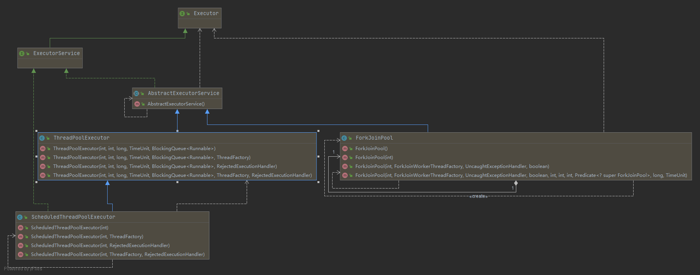
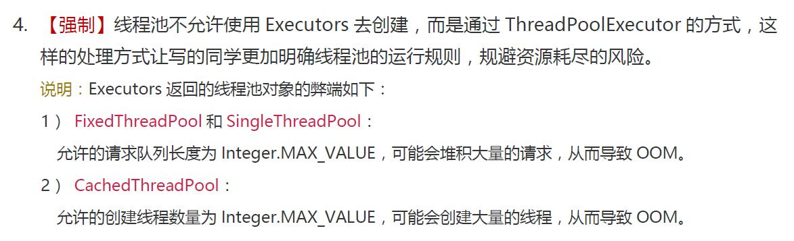
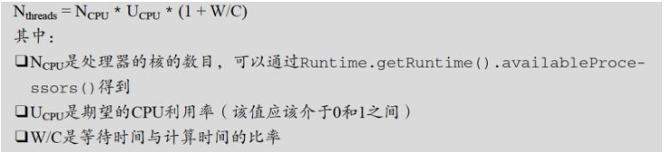

一、使用线程池的好处
降低系统资源消耗, 通过重用已存在的线程, 降低线程创建和销毁造成的消耗
提高系统响应速度, 当有任务到达时, 通过复用已存在的线程, 无需等待新线程的创建便能立即执行
方便线程并发数的管控。因为线程若是无限制的创建, 可能会导致内存占用过多而产生OOM, 并且会造成cpu过度切换（cpu切换线程是有时间成本的-需要保持当前执行线程的现场, 并恢复要执行线程的现场）。
提供更强大的功能, 如延时定时线程池
……
JVM在可创建线程的数量上存在一个限制，这个限制值将随着平台的不同而不同，并且承受着多个因素制约，包括JVM的启动参数、Thread构造函数中请求栈的大小，以及底层操作系统对线程的限制等。如果破坏了这些限制，那么可能抛出OutOfMemoryError异常。
二、线程池实现 使用Executors中创建线程池的快捷方法, 实际上是调用了ThreadPoolExecutor的构造方法（定时任务使用的是ScheduledThreadPoolExecutor、CompletableFuture默认使用的是ForkJoinPool）
线程池设计 
Executor
顶层接口Executor提供了一种思想：将任务提交和任务执行进行解耦。
ExecutorService
ExecutorService接口增加了一些能力：
扩充执行任务的能力, 比如获取任务的执行结果、取消任务等功能，补充可以为一个或一批异步任务生成Future的方法
提供了管控线程池的方法, 比如停止线程池、关闭线程池、以及阻塞等待线程池完全终止的方法
AbstractExecutorService
AbstractExecutorService则是上层的抽象类, 将执行任务的流程串联了起来, 从而使得下层的实现类 ThreadPoolExecutor 只需要实现一个执行任务的方法即可
ThreadPoolExecutor
最下层的实现类ThreadPoolExecutor实现最复杂的运行部分, ThreadPoolExecutor将会一方面维护自身的生命周期, 另一方面同时管理线程和任务, 使两者良好的结合从而执行并行任务
线程池运行流程
线程池在内部实际上构建了一个生产者消费者模型，将线程和任务两者解耦，并不直接关联，从而良好的缓冲任务，复用线程。
线程池的运行主要分成两部分：
任务管理 任务管理部分充当生产者的角色，当任务提交后，线程池会判断该任务后续的流转：
直接申请线程执行该任务
缓冲到队列中等待线程执行
拒绝该任务
线程管理 线程管理部分是消费者，它们被统一维护在线程池内，根据任务请求进行线程的分配，当线程执行完任务后则会继续获取新的任务去执行，最终当线程获取不到任务的时候，线程就会被回收。
构造方法 1 2 3 4 5 6 7 8 9 10 11 12 13 14 15 16 17 18 19 20 21 22 public ThreadPoolExecutor(int corePoolSize, int maximumPoolSize, long keepAliveTime, TimeUnit unit, BlockingQueue<Runnable> workQueue) public ThreadPoolExecutor(int corePoolSize, int maximumPoolSize, long keepAliveTime, TimeUnit unit, BlockingQueue<Runnable> workQueue, ThreadFactory threadFactory) public ThreadPoolExecutor(int corePoolSize, int maximumPoolSize, long keepAliveTime, TimeUnit unit, BlockingQueue<Runnable> workQueue, RejectedExecutionHandler handler) public ThreadPoolExecutor(int corePoolSize, int maximumPoolSize, long keepAliveTime, TimeUnit unit, BlockingQueue<Runnable> workQueue, ThreadFactory threadFactory, RejectedExecutionHandler handler)
参数解释 int corePoolSize 线程池中的核心线程数, 默认情况下, 当初始化线程池时，会创建核心线程进入等待状态, 即便他们在线程池中处于空闲状态，从而降低了任务一来时要创建新线程的时间和性能开销。它的数量决定了添加的任务是开辟新的线程去执行, 还是放到workQueue任务队列中去。
除非我们将ThreadPoolExecutor的allowCoreThreadTimeOut属性设为true的时候, 这时候处于闲置的核心线程在等待新任务到来时会有超时策略, 这个超时时间由keepAliveTime来指定。一旦超过所设置的超时时间, 闲置的核心线程就会被终止。
int maximumPoolSize 线程池中所容纳的最大线程数, 如果活动的线程达到这个数值以后, 后续的新任务将会被阻塞。包含核心线程数+非核心线程数。这个参数会根据你使用的workQueue任务队列的类型, 决定线程池会开辟的最大线程数量。
long keepAliveTime 指定当线程池中空闲线程数量超过corePoolSize时, 多余的线程会在多长时间内被销毁
非核心线程闲置时的超时时长, 对于非核心线程, 闲置时间超过这个时间, 非核心线程就会被回收。只有对ThreadPoolExecutor的allowCoreThreadTimeOut属性设为true的时候, 这个超时时间才会对核心线程产生效果
TimeUnit unit keepAliveTime的单位, TimeUnit是一个枚举类型, 其包括：
NANOSECONDS ： 1微毫秒 = 1微秒 / 1000
MICROSECONDS ： 1微秒 = 1毫秒 / 1000
MILLISECONDS ： 1毫秒 = 1秒 /1000
SECONDS ： 秒
MINUTES ： 分
HOURS ： 小时
DAYS ： 天
BlockingQueue workQueue 任务队列, 由于任务可能会有很多，而线程就那么几个，所以那么还未被执行的任务就进入队列中排队，可以选择下面几个阻塞队列：
SynchronousQueue-直接递交
内部没有任何容量的阻塞队列。在它内部没有任何的缓存空间。对于SynchronousQueue中的数据元素只有当我们试着取走的时候才可能存在
这种策略会将提交的任务直接传送给工作线程，而不持有。如果当前没有工作线程来处理，即任务放入队列失败，则根据线程池的实现，会引发新的工作线程创建，因此新提交的任务会被处理。这种策略在当提交的一批任务之间有依赖关系的时候避免了锁竞争消耗。值得一提的是，这种策略最好是配合unbounded线程数来使用，从而避免任务被拒绝。同时我们必须要考虑到一种场景，当任务到来的速度大于任务处理的速度，将会引起无限制的线程数不断的增加。
ArrayBlockingQueue-有界队列
基于数组实现的有界的阻塞队列,该队列按照FIFO（先进先出）原则对队列中的元素进行排序
有界队列如ArrayBlockingQueue帮助限制资源的消耗，但是不容易控制。队列长度和maximumPoolSize这两个值会相互影响，使用大的队列和小maximumPoolSize会减少CPU的使用、操作系统资源、上下文切换的消耗，但是会降低吞吐量，如果任务被频繁的阻塞如IO线程，系统其实可以调度更多的线程。使用小的队列通常需要大maximumPoolSize，从而使得CPU更忙一些，但是又会增加降低吞吐量的线程调度的消耗。总结一下是IO密集型可以考虑多些线程来平衡CPU的使用，CPU密集型可以考虑少些线程减少线程调度的消耗。
LinkedBlockingQueue-无界队列
基于链表实现的阻塞队列, 该队列按照FIFO（先进先出）原则对队列中的元素进行排序
使用无界队列如LinkedBlockingQueue没有指定最大容量的时候，将会引起当核心线程都在忙的时候，新的任务被放在队列上，因此，永远不会有大于corePoolSize的线程被创建，因此maximumPoolSize参数将失效。这种策略比较适合所有的任务都不相互依赖，独立执行。举个例子，如网页服务器中，每个线程独立处理请求。但是当任务处理速度小于任务进入速度的时候会引起队列的无限膨胀。
PriorityBlockingQueue-具有优先级的无限阻塞队列
根据给定的优先级策略来排序, 可在子线程中实现Comparable接口来实现
1 2 3 4 public int compareTo(ThreadTask o) { //当前对象和其他对象做比较，当前优先级大就返回-1，优先级小就返回1,值越小优先级越高 return this.priority > o.priority ? -1 : 1; }
DelayQueue-延时队列
要求元素都实现Delayed接口，通过执行时延从队列中提取任务，时间没到任务取不出来。
通过实现BlockingQueue接口自定义阻塞队列
有界队列：就是有固定大小的队列。比如设定了固定大小的 LinkedBlockingQueue，又或者大小为 0，只是在生产者和消费者中做中转用的 SynchronousQueue。
无界队列：指的是没有设置固定大小的队列。这些队列的特点是可以直接入列，直到溢出。当然现实几乎不会有到这么大的容量（超过 Integer.MAX_VALUE），所以从使用者的体验上，就相当于 “无界”。比如没有设定固定大小的 LinkedBlockingQueue
ThreadFactory 线程工厂, 用于创建线程, 一般用默认即可；通过自定义ThreadFactory, 可以按需要对线程池中创建的线程进行一些特殊的设置, 如命名、优先级等
1 2 3 4 5 6 7 new ThreadFactory() { private final AtomicInteger mCount = new AtomicInteger(1); public Thread new Thread(Runnable r) { return new Thread(r,"AsyncTask #" + mCount.getAndIncrement()); } }
RejectedExecutionHandler handler 拒绝策略；当任务太多来不及处理时, 如何拒绝任务:
名称
描述
用途
ThreadPoolExecutor.AbortPolicy
丢弃任务并直接抛出RejectedExecutionException异常(默认拒绝策略)
如果是比较关键的业务, 推荐此策略, 这样在系统不能承载更大的并发量时,能够及时的通过异常发现。故需做好日志和警报
ThreadPoolExecutor.CallerRunsPolicy
由调用线程(提交任务的线程)处理
适用于让所有任务都执行完毕, 比如存在大量计算的任务，多线程仅仅是增大吞吐量的手段, 最终必须让每个任务都执行完毕
ThreadPoolExecutor.DiscardPolicy
直接丢弃任务(不抛异常)
因为使用此策略无法发现系统的异常状态, 故一般用于一些无关紧要的业务
ThreadPoolExecutor.DiscardOldestPolicy
丢弃队列最前面的任务, 然后重新提交被拒绝的任务
如果业务中允许老任务, 则可以采用
自定义实现RejectedExecutionHandler
通过实现RejectedExecutionHandler接口自定义handler
如记录日志或持久化不能处理的任务
线程池和装修公司 以运营一家装修公司做个比喻。公司在办公地点等待客户来提交装修请求；公司有固定数量的正式工以维持运转；
线程池就是程序中的“装修公司”, 代劳各种脏活累活。上面的过程对应到线程池上：
1 2 3 4 5 6 7 public ThreadPoolExecutor( int corePoolSize, // 正式工数量 int maximumPoolSize, // 工人数量上限, 包括正式工和临时工 long keepAliveTime, TimeUnit unit, // 临时工游手好闲的最长时间, 超过这个时间将被解雇 BlockingQueue<Runnable> workQueue, // 排期队列 ThreadFactory threadFactory, // 招人渠道 RejectedExecutionHandler handler) // 拒单方式
ThreadPoolExecutor执行流程 当一个任务被添加进线程池时：
线程数量未达到corePoolSize, 则新建一个线程执行任务, 即使此时线程池中存在空闲线程
线程数量达到corePoolSize时, 则将任务放入队列workQueue中, 等待线程池中任务调度执行
当队列workQueue已满, 且maximumPoolSize>corePoolSize时, 则创建新线程执行任务
当队列workQueue已满, 总线程数又达到了maximumPoolSize时, 就会执行拒绝策略RejectedExecutionHandler
另外
当线程池中超过corePoolSize线程, 空闲时间达到keepAliveTime时, 关闭空闲线程
当设置allowCoreThreadTimeOut(true)时, 线程池中corePoolSize线程空闲时间达到keepAliveTime也将关闭
由此可以看出, 可能会有以下问题：
corePoolSize和maximumPoolSize设置不当会影响效率, 甚至耗尽线程
workQueue设置不当容易导致OOM
handler设置不当会导致提交任务时抛出异常
向ThreadPoolExecutor添加任务 execute 执行runnable, 没有返回值
submit 提交一个线程任务, 可以接受回调函数的返回值, 适用于需要处理返回着或者异常的业务场景
1 2 3 <T> Future<T> submit(Callable<T> task); <T> Future<T> submit(Runnable task, T result); Future<?> submit(Runnable task);
获取结果 线程池的处理结果、以及处理过程中的异常都被包装到Future中, 并在调用Future.get()方法时获取, 执行过程中的异常会被包装成ExecutionException, submit()方法本身不会传递结果和任务执行过程中的异常
获取单个结果 1 2 3 4 5 6 7 8 9 10 11 12 13 14 15 16 ExecutorService executorService = Executors.newCachedThreadPool(4); Future<Object> future = executorService.submit(new Callable<Object>() { @Override public Object call() throws Exception { throw new RuntimeException("exception in call~");// 该异常会在调用Future.get()时传递给调用者 } }); try { Object result = future.get(); } catch (InterruptedException e) { // interrupt } catch (ExecutionException e) { // exception in Callable.call() e.printStackTrace(); }
单个任务的超时时间 V Future.get(long timeout, TimeUnit unit)方法可以指定等待的超时时间, 超时未完成会抛出TimeoutException。
获取多个结果 如果向线程池提交了多个任务, 要获取这些任务的执行结果, 可以依次调用Future.get()获得。
但对于这种场景, 更应该使用ExecutorCompletionService, ExecutorCompletionService提供了等待所有任务执行结束的有效方式
该类的take()方法总是阻塞等待某一个任务完成, 然后返回该任务的Future对象。向CompletionService批量提交任务后, 只需调用相同次数的CompletionService.take()方法, 就能获取所有任务的执行结果, 获取顺序是任意的, 取决于任务的完成顺序
CompletionService：一种执行者，可将submit的多个任务的结果按照完成的先后顺序存入一个内部队列，然后可以使用take方法从队列中依次取出结果并移除，如果调用take时计算未完成则会阻塞
1 2 3 4 5 6 7 8 9 10 11 12 13 14 15 void solve(Executor executor, Collection<Callable<Result>> solvers) throws InterruptedException, ExecutionException { CompletionService<Result> ecs = new ExecutorCompletionService<Result>(executor);// 构造器 for (Callable<Result> s : solvers) {// 提交所有任务 ecs.submit(s); } int n = solvers.size(); for (int i = 0; i < n; ++i) {// 获取每一个完成的任务 Result r = ecs.take().get(); if (r != null) use(r); } }
多个任务的超时时间 等待多个任务完成, 并设置最大等待时间, 可以通过CountDownLatch完成：
1 2 3 4 5 6 7 8 9 10 11 12 13 14 15 16 17 18 public void testLatch(ExecutorService executorService, List<Runnable> tasks) throws InterruptedException{ CountDownLatch latch = new CountDownLatch(tasks.size()); for(Runnable r : tasks){ executorService.submit(new Runnable() { @Override public void run() { try{ r.run(); }finally { latch.countDown();// countDown } } }); } latch.await(10, TimeUnit.SECONDS); // 指定超时时间 }
异常处理 线程中的异常如果不处理的外，外部是无法感知的。异常处理可以用以下几种方式：
直接线程中try/catch 通过Future对象的get方法接收抛出的异常 为工作者线程设置UncaughtExceptionHandler，在uncaughtException方法中处理异常 1 2 3 4 5 6 7 8 9 10 11 12 13 ExecutorService threadPool = Executors.newFixedThreadPool(1, r -> { Thread t = new Thread(r); t.setUncaughtExceptionHandler( (t1, e) -> { System.out.println(t1.getName() + "线程抛出的异常"+e); }); return t; }); threadPool.execute(()->{ Object object = null; System.out.print("result## " + object.toString()); });
重写ThreadPoolExecutor的afterExecute方法，处理传递的异常引用 1 2 3 4 5 6 7 8 9 10 11 12 13 14 15 16 17 18 19 class ExtendedExecutor extends ThreadPoolExecutor protected void afterExecute (Runnable r, Throwable t) super .afterExecute(r, t); if (t == null && r instanceof Future<?>) { try { Object result = ((Future<?>) r).get(); } catch (CancellationException ce) { t = ce; } catch (ExecutionException ee) { t = ee.getCause(); } catch (InterruptedException ie) { Thread.currentThread().interrupt(); } } if (t != null ) System.out.println(t); } }}
优雅的关闭线程池 需要注意的是，如果线程池不关闭的话，会一直占用内存，需手动关闭
Executors作为局部变量时，创建了线程，一定要记得调用executor.shutdown();来关闭线程池，如果不关闭，会有线程泄漏问题。
shutdown() 表示不再接受新任务, 但不会强行终止已经提交或者正在执行中的任务, 经常和pool.awaitTermination(1, TimeUnit.SECONDS) 配合使用，这个方法会每隔一秒钟检查一次是否执行完毕（状态为 TERMINATED），当从 while 循环退出时就表明线程池已经完全终止了
1 2 3 4 5 6 7 8 9 10 long start = System.currentTimeMillis(); for (int i = 0; i <= 5; i++) { pool.execute(new Job()); } pool.shutdown(); while (!pool.awaitTermination(1, TimeUnit.SECONDS)) { LOGGER.info("线程还在执行。。。"); } long end = System.currentTimeMillis(); LOGGER.info("一共处理了【{}】", (end - start));
shutdownNow() 对于尚未执行的任务全部取消, 正在执行的任务全部发出interrupt(), 停止执行
invokeAll: ExecutorService使用invokeAll()启动集合中的每个Callable, 只有在所有任务完成后，invokeAll() 才会返回一个 Future 列表，每个任务一个 Future。但java8后推荐使用CompletableFuture
下面我们来看看java默认提供的几个线程池
三、 java内置的线程池 newCachedThreadPool 可缓存线程池：
线程数无限制
有空闲线程则复用空闲线程, 若无空闲线程则新建线程
一定程序减少频繁创建/销毁线程, 减少系统开销
1 2 3 4 5 6 7 8 9 //创建方式 ExecutorService cachedThreadPool = Executors.newCachedThreadPool(); //源码 public static ExecutorService newCachedThreadPool() { return new ThreadPoolExecutor(0, Integer.MAX_VALUE, 60L, TimeUnit.SECONDS, new SynchronousQueue<Runnable>()); }
适用：执行很多短期异步的小程序或者负载较轻的服务器, 可以使得任务快速得到执行, 因为任务时间执行短, 可以很快结束, 也不会造成cpu过度切换
newFixedThreadPool 定长线程池：
可控制线程最大并发数（同时执行的线程数）
超出的线程会在队列中等待
1 2 3 4 5 6 7 8 9 //创建方式 ExecutorService fixedThreadPool = Executors.newFixedThreadPool(int nThreads); //源码 public static ExecutorService newFixedThreadPool(int nThreads) { return new ThreadPoolExecutor(nThreads, nThreads, 0L, TimeUnit.MILLISECONDS, new LinkedBlockingQueue<Runnable>()); }
适用：执行长期的任务, 因为采用无界的阻塞队列, 所以实际线程数量永远不会变化, 适用于负载较重的场景, 对当前线程数量进行限制。（保证线程数可控, 不会造成线程过多, 导致系统负载更为严重）如果某个线程因为执行异常而结束，那么线程池会补充一个新线程
newSingleThreadExecutor 单线程化的线程池：
有且仅有一个工作线程执行任务
所有任务按照指定顺序执行, 即遵循队列的入队出队规则
1 2 3 4 5 6 7 8 9 10 //创建方式 ExecutorService singleThreadPool = Executors.newSingleThreadExecutor(); //源码 public static ExecutorService newSingleThreadExecutor() { return new FinalizableDelegatedExecutorService (new ThreadPoolExecutor(1, 1, 0L, TimeUnit.MILLISECONDS, new LinkedBlockingQueue<Runnable>())); }
适用：一个任务一个任务执行的场景，如果这个唯一的线程因为异常结束，那么会有一个新的线程来替代它
ScheduledThreadPool 定长线程池：
1 2 3 4 5 6 7 8 9 10 11 12 13 14 15 //创建方式 ExecutorService scheduledThreadPool = Executors.newScheduledThreadPool(int corePoolSize); //源码 public static ScheduledExecutorService newScheduledThreadPool(int corePoolSize) { return new ScheduledThreadPoolExecutor(corePoolSize); } //ScheduledThreadPoolExecutor(): public ScheduledThreadPoolExecutor(int corePoolSize) { super(corePoolSize, Integer.MAX_VALUE, DEFAULT_KEEPALIVE_MILLIS, MILLISECONDS, new DelayedWorkQueue()); }
适用：延时或者周期性执行任务的场景
同样可以模拟心跳机制，如果用户希望取消心跳， scheduleAtFixedRate 调用将返回一个 ScheduledFuture 实例，它不仅封装了结果（如果有），还拥有一个 cancel 方法来关闭计划的操作
newWorkStealingPool Java 8新增的具有抢占式操作的线程池，其内部会构建ForkJoinPool，利用Work-Stealing算法，并行地处理任务，不保证处理顺序，哪个线程抢到任务，就由它执行
1 2 3 4 5 6 7 8 9 10 //创建方式 ExecutorService executorService = Executors.newWorkStealingPool(); //源码 public static ExecutorService newWorkStealingPool() { return new ForkJoinPool (Runtime.getRuntime().availableProcessors(), ForkJoinPool.defaultForkJoinWorkerThreadFactory, null, true); }
Executors有一个静态方法,该方法可以对现有的ExecutorService进行包装,使其只暴露出ExecutorService的方法,因此不能对其进行配置,如果我们需要创建不可更改的线程池,可以使用这个方法:
1 2 Executors.unconfigurableExecutorService(executorService);//不可配置的线程池 Executors.unconfigurableScheduledExecutorService(scheduledExecutorService);//不可配置的调度线程池
四、配置线程池 为何不推荐java提供的几种线程池 客户端程序使用这些快捷方法没什么问题, 对于服务端需要长期运行的程序, 创建线程池应该直接使用ThreadPoolExecutor的构造方法, 避免无界队列(比如线程获取一个任务后，任务的执行时间比较长，会导致队列的任务越积越多，导致机器内存使用不停飙升，最终导致OOM)可能导致的OOM以及线程个数限制不当导致的线程数耗尽等问题
所以阿里巴巴java开发手册中明确指出,线程池不允许使用Executors去创建：

线程池大小设置 线程池大小的设置，在 「Java 并发编程实战」一书中，Brian Goetz 提供了不少优化建议。如果线程池数量过多，竞争 CPU 和内存资源，导致大量时间在上下文切换上。反之，如果线程池数量过少，
线程池大小与 CPU 处理器的利用率之比可以用下面公式估算

虽然线程池大小的设置受到很多因素影响，但是这里给出一个参考公式：
最佳线程数目 = （（线程等待时间+线程CPU时间）/线程CPU时间 ）* CPU数目
比如平均每个线程CPU运行时间为0.5s，而线程等待时间（非CPU运行时间，比如IO）为1.5s，CPU核心数为8，那么根据上面这个公式估算得到：((0.5+1.5)/0.5)*8=32。这个公式进一步转化为：
最佳线程数目 = （线程等待时间与线程CPU时间之比 + 1）* CPU数目
线程等待时间所占比例越高，需要越多线程。线程CPU时间所占比例越高，需要越少线程。
所以并不是单纯的只是配一个CUP核心数就ok了。但一般都是整数倍
CPU密集型任务 尽量使用较小的线程池, 一般为CPU核心数+1。 因为CPU密集型任务使得CPU使用率很高, 若开过多的线程数, 会造成CPU过度切换。
IO密集型任务 可以使用稍大的线程池, 一般为2*CPU核心数。 IO密集型任务CPU使用率并不高, 因此可以让CPU在等待IO的时候有其他线程去处理别的任务, 充分利用CPU时间。
混合型任务 可以将任务分成IO密集型和CPU密集型任务, 然后分别用不同的线程池去处理。 只要分完之后两个任务的执行时间相差不大, 那么就会比串行执行来的高效。
五、SpringBoot中使用线程池 ThreadPoolExecutor 直接使用JDK中的线程池类
定义 1 2 3 4 5 6 7 8 9 10 11 12 13 14 15 16 17 18 19 20 21 22 23 24 25 26 27 28 29 30 31 32 33 34 35 36 37 38 39 40 41 42 43 44 45 46 47 48 49 50 51 52 53 54 55 56 57 58 59 60 61 62 63 64 65 66 67 68 69 70 71 72 73 74 75 76 77 78 79 80 81 82 83 84 85 86 87 88 89 90 91 92 93 94 95 96 97 98 99 100 101 102 103 @Configuration public class ThreadPoolExecutorConfig @Bean(value = "taskQueueThreadPool") public ExecutorService buildTaskQueueThreadPool () int poolSize = Runtime.getRuntime().availableProcessors() * 2 ; return new ThreadPoolExecutor(poolSize, poolSize, 0L , TimeUnit.SECONDS, new ArrayBlockingQueue<>(512 ), new ThreadFactoryBuilder() .setNameFormat("task-queue-thread-%d" ).build(), new ThreadPoolExecutor.AbortPolicy()); } @Bean(value = "examineQueueThreadPool") public ExecutorService buildExamineQueueThreadPool () int poolSize = Runtime.getRuntime().availableProcessors() * 2 ; return new ThreadPoolExecutor(poolSize, poolSize, 0L , TimeUnit.SECONDS, new ArrayBlockingQueue<>(512 ), new ThreadFactoryBuilder() .setNameFormat("examine-queue-thread-%d" ).build(), new ThreadPoolExecutor.AbortPolicy()); } @Bean public ThreadPoolTaskExecutor threadPoolTaskExecutor () ThreadPoolTaskExecutor threadPoolTaskExecutor = new ThreadPoolTaskExecutor(); threadPoolTaskExecutor.setCorePoolSize(50 ); threadPoolTaskExecutor.setMaxPoolSize(200 ); threadPoolTaskExecutor.setQueueCapacity(1000 ); threadPoolTaskExecutor.setThreadNamePrefix("Data-Job" ); threadPoolTaskExecutor.setWaitForTasksToCompleteOnShutdown(true ); threadPoolTaskExecutor.setAwaitTerminationSeconds(60 ); return threadPoolTaskExecutor; } @Bean(name = "asyncPoolTaskExecutor") public ThreadPoolTaskExecutor getAsyncThreadPoolTaskExecutor () ThreadPoolTaskExecutor taskExecutor = new ThreadPoolTaskExecutor(); taskExecutor.setCorePoolSize(20 ); taskExecutor.setMaxPoolSize(200 ); taskExecutor.setQueueCapacity(25 ); taskExecutor.setKeepAliveSeconds(200 ); taskExecutor.setThreadNamePrefix("oKong-" ); taskExecutor.setRejectedExecutionHandler(new ThreadPoolExecutor.CallerRunsPolicy()); taskExecutor.setWaitForTasksToCompleteOnShutdown(true ); taskExecutor.setAwaitTerminationSeconds(60 ); taskExecutor.initialize(); return taskExecutor; } @Bean public ThreadPoolTaskExecutor defaultThreadPool () ThreadPoolTaskExecutor executor = new ThreadPoolTaskExecutor(); executor.setCorePoolSize(16 ); executor.setMaxPoolSize(64 ); executor.setQueueCapacity(16 ); executor.setThreadNamePrefix("defaultThreadPool_" ); executor.setRejectedExecutionHandler(new ThreadPoolExecutor.CallerRunsPolicy()); executor.setKeepAliveSeconds(60 ); executor.initialize(); return executor; } @Bean public Executor asyncServiceExecutor () logger.info("start asyncServiceExecutor" ); ThreadPoolTaskExecutor executor = new ThreadPoolTaskExecutor(); executor.setCorePoolSize(5 ); executor.setMaxPoolSize(5 ); executor.setQueueCapacity(99999 ); executor.setThreadNamePrefix("async-service-" ); executor.setRejectedExecutionHandler(new ThreadPoolExecutor.CallerRunsPolicy()); executor.initialize(); return executor; } }
使用 //原始(不推荐)
1 2 3 4 5 6 @Resource(name = "taskQueueThreadPool") private ExecutorService taskQueueThreadPool; public void execute() { taskQueueThreadPool.execute(new TaskCommitThread()); }
//SpringBoot提供的@Async(“asyncServiceExecutor”)注解
1 2 3 4 5 6 7 8 9 10 @Async("asyncServiceExecutor") public void executeAsync() { System.out.println(Thread.currentThread().getName() + ">>start executeAsync"); try{ Thread.sleep(1000); }catch(Exception e){ e.printStackTrace(); } System.out.println(Thread.currentThread().getName() + "end executeAsync"); }
注意调用者与被调用者不能在同一个类中
@Async 注解的方法只能返回void或者future类型的返回值
ThreadPoolTaskExecutor(推荐) Spring框架自己实现的线程池类
定义 1 2 3 4 5 6 7 8 9 10 11 12 13 14 15 16 17 18 19 20 21 22 23 24 25 26 27 28 29 30 31 32 33 34 35 36 37 38 39 40 41 42 43 44 45 46 47 48 49 50 51 52 53 54 55 56 57 58 59 60 61 62 63 64 65 66 @EnableAsync @Configuration public class AsyncConfig implements AsyncConfigurer @Override public Executor getAsyncExecutor () ThreadPoolTaskExecutor taskExecutor = new ThreadPoolTaskExecutor(); taskExecutor.setCorePoolSize(5 ); taskExecutor.setMaxPoolSize(1024 ); taskExecutor.setQueueCapacity(200 ); taskExecutor.setKeepAliveSeconds(1000 ); taskExecutor.setThreadNamePrefix("task-async-" ); taskExecutor.setRejectedExecutionHandler(new ThreadPoolExecutor.AbortPolicy()); taskExecutor.setWaitForTasksToCompleteOnShutdown(true ); taskExecutor.setAwaitTerminationSeconds(60 * 15 ); taskExecutor.initialize(); return taskExecutor; } @Override public AsyncUncaughtExceptionHandler getAsyncUncaughtExceptionHandler () return new MyAsyncExceptionHandler(); } class MyAsyncExceptionHandler implements AsyncUncaughtExceptionHandler @Override public void handleUncaughtException (Throwable throwable, Method method, Object... objects) log.info("Exception message - " + throwable.getMessage()); log.info("Method name - " + method.getName()); for (Object param : objects) { log.info("Parameter value - " + param); } } } }
常用策略
ThreadPoolExecutor.AbortPolicy 丢弃任务并抛出RejectedExecutionException异常(默认)。
ThreadPoolExecutor.DiscardPolic 丢弃任务，但是不抛出异常。
ThreadPoolExecutor.DiscardOldestPolicy 丢弃队列最前面的任务，然后重新尝试执行任务
ThreadPoolExecutor.CallerRunsPolic 由调用线程处理该任务
使用 直接在被调用的方法上加上@Async即可
定义多个线程池 实际业务中可能会根据场景不同，使用不同的线程池：
1 2 3 4 5 6 7 8 9 10 11 12 13 //AsyncConfig 中新增线程池即可 @Bean("simpleThreadPool") public ThreadPoolTaskExecutor simpleThreadPool(){ ThreadPoolTaskExecutor simpleThreadPool = new ThreadPoolTaskExecutor(); simpleThreadPool.setCorePoolSize(5); simpleThreadPool.setMaxPoolSize(200); simpleThreadPool.setQueueCapacity(25); simpleThreadPool.setRejectedExecutionHandler(new ThreadPoolExecutor.AbortPolicy()); simpleThreadPool.setThreadNamePrefix("simple-async-"); simpleThreadPool.initialize(); return simpleThreadPool; }
在需要使用该线程池的方法中，加上@Async(“simpleThreadPool”)即可
如果@Async未指定值，则会使用默认的线程池，如果指定了线程池，则使用指定的线程池。
如果业务场景中存在并发量在某些特殊时间段下特别高，可以将线程池的各个配置在application.yml中配置，或者通过web端动态配置，不同情况下不同的线程池策略
观察线程池执行情况 如果需要观察线程池执行情况，继承ThreadPoolTaskExecutor，编写:
1 2 3 4 5 6 7 8 9 10 11 12 13 14 15 16 17 18 19 20 21 22 23 24 25 26 27 28 29 30 31 32 33 34 35 36 37 38 39 40 41 42 43 44 45 46 47 48 49 50 51 52 53 54 55 56 57 58 59 60 public class VisiableThreadPoolTaskExecutor extends ThreadPoolTaskExecutor private final Logger log = LoggerFactory.getLogger(this .getClass()); private void showThreadPoolInfo (String prefix) ThreadPoolExecutor threadPoolExecutor = getThreadPoolExecutor(); if (null ==threadPoolExecutor){ return ; } log.info("{}, {},taskCount [{}], completedTaskCount [{}], activeCount [{}], queueSize [{}]" , this .getThreadNamePrefix(), prefix, threadPoolExecutor.getTaskCount(), threadPoolExecutor.getCompletedTaskCount(), threadPoolExecutor.getActiveCount(), threadPoolExecutor.getQueue().size()); } @Override public void execute (Runnable task) showThreadPoolInfo("1. do execute" ); super .execute(task); } @Override public void execute (Runnable task, long startTimeout) showThreadPoolInfo("2. do execute" ); super .execute(task, startTimeout); } @Override public Future<?> submit(Runnable task) { showThreadPoolInfo("1. do submit" ); return super .submit(task); } @Override public <T> Future<T> submit (Callable<T> task) { showThreadPoolInfo("2. do submit" ); return super .submit(task); } @Override public ListenableFuture<?> submitListenable(Runnable task) { showThreadPoolInfo("1. do submitListenable" ); return super .submitListenable(task); } @Override public <T> ListenableFuture<T> submitListenable (Callable<T> task) { showThreadPoolInfo("2. do submitListenable" ); return super .submitListenable(task); } }
将原有的ThreadPoolTaskExecutor改为自定义后的线程池类
六、线程池在业务中的实践 1. 快速响应用户请求 用户发起的实时请求，服务追求响应时间。这种场景最重要的就是获取最大的响应速度去满足用户，所以应该不设置队列去缓冲并发任务，调高corePoolSize和maxPoolSize去尽可能创造多的线程快速执行任务。
2. 快速处理批量任务 离线的大量计算任务，需要快速执行。与响应速度优先的场景区别在于，这类场景任务量巨大，并不需要瞬时的完成，而是关注如何使用有限的资源，尽可能在单位时间内处理更多的任务，也就是吞吐量优先的问题。所以应该设置队列去缓冲并发任务，调整合适的corePoolSize去设置处理任务的线程数。在这里，设置的线程数过多可能还会引发线程上下文切换频繁的问题，也会降低处理任务的速度，降低吞吐量。
思考
在Java1.4之前，已经提供了Runnable接口、Thread类、Timer类和synchronize关键字，它们已经足以完成各种各样的多线程编程任务，为什么还要提供执行者这样的概念呢？这是因为Java的设计者想把线程的创建、执行和调度分离。
在concurrent包出现之前，线程的创建基本上靠new一个Thread对象，执行靠start()方法，而线程的调度则完全依赖程序员在具体代码中自己写出来。
而concurrent包出现之后，线程的创建还是依靠Thread、Runnable和Callable对象的实例化；而线程的执行则靠Executor、ExecutorService的对象执行execute()方法或submit()方法；线程的调度则被固化为几个具体的线程池类，如ThreadPoolExecutor、ScheduledThreadPoolExecutor、ExecutorCompletionService等等。这样表面上增加了复杂度，而实际上成功将线程的创建、执行和调度的业务逻辑分离，使程序员能够将精力集中在线程中业务逻辑的编写，大大提高了编码效率，降低了出错的概率，而且大大提高了性能
参考资料 Java线程池实现原理及其在美团业务中的实践